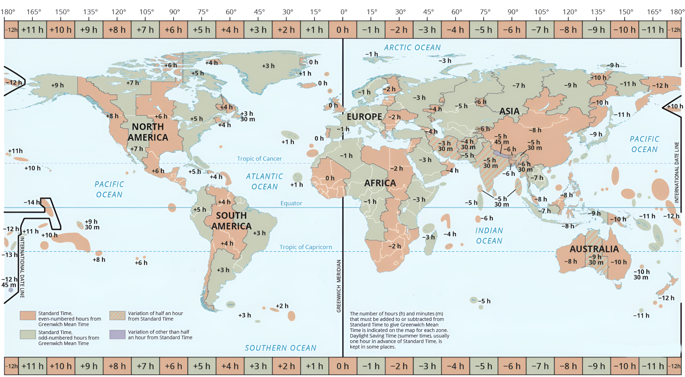

Choose
Your
Zone
Information
Time Zone
Your Local Time:
Selected Time Zone:
Select a Time Zone
UTC-11 - SST
UTC-10 - HST
UTC-9 - AKST
UTC-8 - PST
UTC-7 - MST
UTC-6 - CST
UTC-6 - CST
UTC-5 - EST
UTC-4 - AST
UTC-3 - ART
UTC-3 - BRST
UTC-2 - GST
UTC-1 - AZOT
UTC+0 - GMT
UTC+0 - GMT
UTC+0 - WET
UTC+1 - CET
UTC+1 - CET
UTC+1 - CET
UTC+1 - CET
UTC+1 - CET
UTC+1 - CET
UTC+1 - CET
UTC+1 - CET
UTC+1 - CET
UTC+1 - CET
UTC+1 - CET
UTC+2 - EET
UTC+2 - EET
UTC+1 - CET
UTC+2 - SAST
UTC+3 - MSK
UTC+3 - EAT
UTC+3 - AST
UTC+4:30 - AFT
UTC+4 - GST
UTC+5 - PKT
UTC+5:30 - IST
UTC+5:45 - NPT
UTC+6 - BST
UTC+6:30 - MMT
UTC+7 - ICT
UTC+7 - ICT
UTC+8 - CST
UTC+8 - HKT
UTC+8 - SGT
UTC+8 - WIB
UTC+8 - PHT
UTC+9 - JST
UTC+9 - KST
UTC+9:30 - ACST
UTC+10 - AEST
UTC+11 - NCT
UTC+12 - NZST
UTC+12:45 - CHAST
UTC+13 - TOT
UTC+14 - LINT
